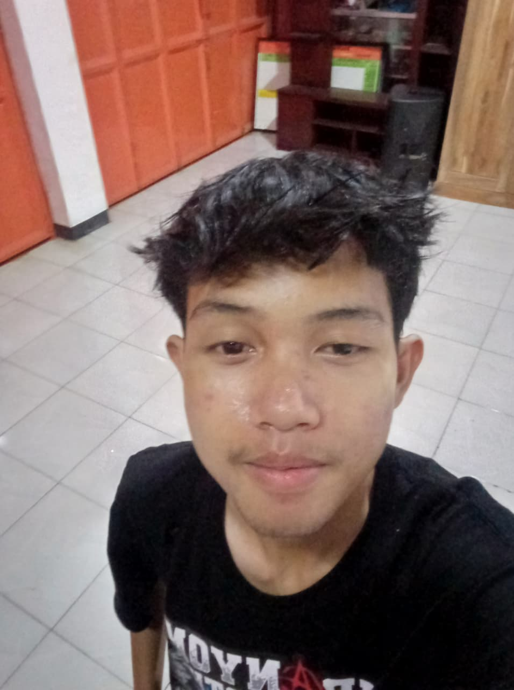
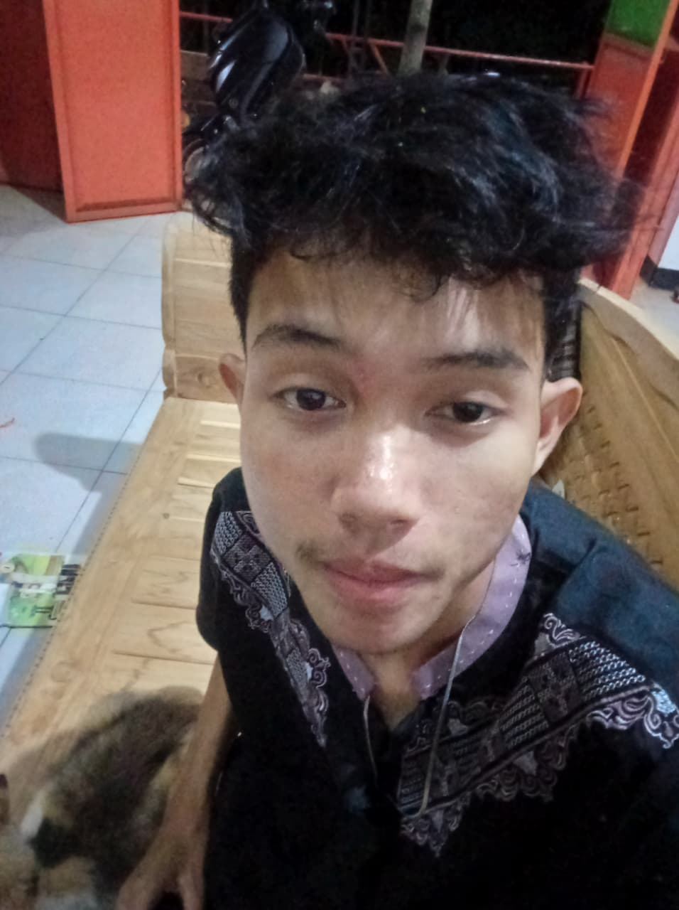

Hi, I'm Andika
Front-End Developer & Student from Indonesia
I love creating modern, responsive, and interactive web experiences — with an eye for detail and a love for clean code.
Meet Andika
A closer look, beyond the code.
Di luar baris kode, saya suka mengamati detail kecil yang bikin sesuatu terasa dipikirkan matang — mulai dari cara desain, urutan interaksi, sampai secangkir kopi yang menemani proses ngoding.
- Pacitan, Jawa Timur
- Sedang mengeksplorasi cara membangun interface yang lebih baik
- Ngoding paling lancar ditemani kopi & playlist instrumental
- Percaya bahwa progres kecil yang konsisten akan membawa hasil


About Me
Belajar, membangun, mengulangi.
Bukan paragraf panjang — beberapa potongan singkat tentang siapa saya dan ke mana arah saya.
Andika Pratama — pelajar & front-end developer dari Pacitan, Indonesia.
Saya suka mengubah ide menjadi antarmuka yang hidup: rapi, responsif, dan enak dipakai. Setiap proyek adalah latihan untuk berpikir seperti pengguna, bukan cuma seperti programmer.
What I Enjoy Building
Antarmuka web dengan animasi halus dan detail interaksi kecil — hover, transisi, micro-copy — yang membuat sebuah produk terasa dipikirkan matang.
Current Focus
Memperdalam JavaScript modern dan bersiap masuk ke React di semester berikutnya.
Career Goals
Menjadi front-end developer yang bisa diandalkan di proyek nyata, sambil terus mengasah rasa desain.
Learning Mindset
Saya percaya progres kecil yang konsisten mengalahkan usaha besar yang sesekali. Tiap bug yang berhasil diperbaiki adalah pelajaran, bukan kegagalan.
Fun Facts
- Bisa lupa waktu kalau sudah utak-atik CSS animation.
- Ngoding paling lancar ditemani kopi dan playlist instrumental.
- Portfolio ini sudah masuk revisi ketiga — dan masih akan terus diperbaiki.
Workflow
From idea to interface.
Bagaimana saya mengubah ide menjadi website yang rapi, interaktif, dan siap digunakan.
Plan
Memahami kebutuhan dan merencanakan struktur serta fitur.
Build
Mengubah struktur yang direncanakan menjadi interface yang fungsional dan interaktif.
Refine
Merapikan responsive layout, interaction, animation, dan UI.
Ship
Testing, memperbaiki bug, dan memastikan website siap digunakan.
Featured Projects
Beberapa hal yang sudah saya bangun.
Klik "Case Study" untuk melihat masalah, solusi, dan apa yang saya pelajari dari tiap proyek.
Journey
Perjalanan belajar saya sejauh ini.
Started learning programming
Mengenal dasar-dasar HTML dan bagaimana halaman web disusun.
Built first website
Mempelajari CSS untuk mendesain tampilan dan membuat layout pertama.
From Learning to Building
Belajar JavaScript untuk menambahkan interaktivitas, sekaligus membawa proyek jadi lebih hidup — dari sekadar struktur ke pengalaman yang terasa nyata.
Building Multiple Projects
Mengerjakan beberapa proyek nyata sekaligus, dari eksperimen kecil sampai proyek yang lebih serius.
Currently learning React & Next.js
Mulai menjajaki component-based development dengan React, dan mengarah ke Next.js untuk proyek berikutnya.
Full-stack & production-ready projects
Menguasai backend dasar dan mulai berkontribusi ke proyek nyata.
Projects Completed
Years Learning
Public Repositories
Contact
Let's build something.
Punya ide, project, atau ingin berdiskusi tentang web development?
Kirim pesan dan saya akan membacanya.
Have a project in mind?
Ceritakan sedikit tentang apa yang ingin kamu bangun. Kita lihat bagaimana mengembangkannya.